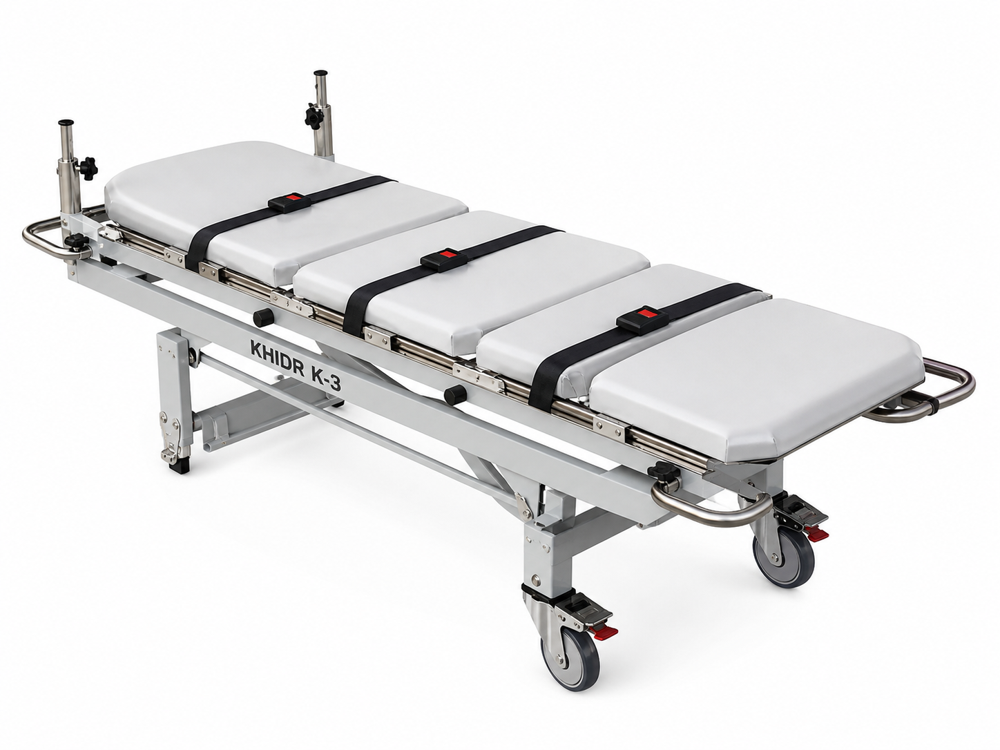

Hastane transferi ve uzun mesafe taşıma için tasarlanmış yüksek kapasiteli modüler sedye. Çelik & polimer hibrit yapısı, ağır hasta taşımada kalıcı konfor ve klinik güvenlik standardını bir arada sunar.

KHIDR K-3, klinik ortamların titiz gereksinimlerini saha taşımacılığının sertliğiyle buluşturmak üzere tasarlandı. S235 yapısal çelik ana iskelet, modüler polimer bölüm plakalarıyla birleşerek hem 250 kg'lık yük kapasitesini hem de hastanın birden fazla pozisyonda desteklenmesini mümkün kılar. Paslanmaz çelik ray ve kızak sistemi, tüm bölümlerin araç standına veya ambulans sedye kilidine kilitlenerek güvenli transferini sağlar.
Anatomisi
EN 10025-2 normuna uygun S235JR soğuk hadde kare profil (40×40×2 mm) ana boyuna kirişler ve 30×30×2 mm enine traverslerden oluşan taşıyıcı çerçeve. Minimum akma dayanımı 235 MPa, minimum çekme dayanımı 360 MPa. Köşe ve T-birleşimleri MIG kaynak ile birleştirilmiş; kaynak bölgeleri penetrant muayene (PT) ile kontrol edilmiştir.
Baş, üst gövde, alt gövde ve bacak olmak üzere dört ayrı yüzey bölümü; 8 mm kalınlıkta yüksek yoğunluklu polietilen (HDPE 500) plakadan imal edilmiştir. Her bölüm ana çelik kirişlerin üzerinde koşan paslanmaz çelik ray kanallarına kızaklanır. Bu sistem, klinik gereksinime göre bölümlerin bağımsız eğilmesine (Trendelenburg, Fowler) ve hatta çıkarılmasına imkân tanır.
AISI 316L paslanmaz çelikten çekilen boyuna T-ray profilleri, çelik iskelet üzerine M5 kontr-somunlu vidalarla sabitlenir. Bölüm plakalarının her iki yanındaki kızak flanşları raya geçerek 10 farklı açı pozisyonuna kilitlenebilen çelik pim-yay mekanizmasına oturur. Kilit kuvveti plaka başına ≥ 800 N olarak tasarlanmıştır; istem dışı açılmayı önlemek için çift güvenlik mandalı bulunur.
Her modüler bölüm plakasının üzerine 40 mm kalınlıkta visco-elastik köpük ped oturur; yoğunluk 55 kg/m³, sertlik ILD40. Ped yüzeyi hastane sınıfı PU deri örtü ile kaplanmıştır: antimikrobiyal, hidrolik sıvılara karşı dayanıklı, EN 13795'e uygun bariyer kapasitesi. Örtü fermuarla sökülebilir ve 60 °C'de otoklavlanabilir.
Dört adet 50 mm eninde poliester kemer (göğüs, bel, uyluk, bacak); kırılma yükü ≥ 2500 kg. Otomatik kilitli plastik tokaları tek elle kilitleme ve serbest bırakma imkânı sunar, ancak iki eş zamanlı hareket olmadan açılmaz — hasta hareketi veya titreşim kaynaklı kazara açılma riski ortadan kalkar. Kemerin iskelet üzerindeki D-halkalara bağlandığı noktalarda paslanmaz çelik D-halka kaynak arması (strap lug) mevcuttur.
İskeletin dört köşesine kaynaklı AISI 304 paslanmaz çelik boru saplar (çap 25 mm); yüzey kaplamasız sap tercih edildiğinde ısıl sprey ile doku tutturucu kaplama uygulanır. Opsiyonel alüminyum katlanır stand iki ön tekerlek (PU, Ø 75 mm, frenli) ve iki arka sabit ayak üzerine oturur; sedyenin zemin yüksekliğini 70–95 cm arasında ayarlar.
İskeletin her iki üst köşesinde standart 22 mm iç çaplı paslanmaz soket; serum askısı, kardiyak monitör direği veya oksijen tüpü braketini kolayca kabul eder. Soketler, M6 kilitleme vidasıyla aksesuar titreşim kaynaklı gevşemeye karşı sabitlemeye olanak tanır. Bu özellik, K-3'ü transferde klinik ekipmanlı kullanım için uygun kılar.
Çelik iskelet kumlama (Sa 2,5) ile yüzey hazırlığının ardından iki kat epoksi astar (toplam 40 µm) ve tek kat poliüretan toz boya (60 µm) uygulanır. Toplam kuru film kalınlığı: 100 µm. Gıda ile temassız sağlık ekipmanı standardına göre seçilmiş renk (RAL 7035 açık gri). ISO 9227 tuz sprey testi: ≥ 600 saat.
Nasıl Yapıyoruz?
S235JR soğuk hadde kare profiller CNC orbital bant testere ile ±0,2 mm toleranslı boyutlara kesilir. Birleşim noktaları 3 eksenli kaynak jigine sabitlenmiş halde MAG (metal aktif gaz) kaynakla birleştirilir; dolgu teli ER70S-6, koruyucu gaz Ar/%18 CO₂ karışımıdır. Tüm kaynak dikişleri EN ISO 5817 kalite sınıfı B (en yüksek) gereksinimlerine göre görsel muayeneden, kritik birleşimler penetrant test (PT) muayenesinden geçirilir. Kaynaklı iskelet oda sıcaklığında doğal soğutma sonrası boyutsal kontrole alınır.
HDPE 500 hammadde plakalar (2000×1000×8 mm) CNC freze merkezinde kontur kesimiyle dört modüler bölüm plakasına dönüştürülür. Kızak flanş profilleri, kemer D-halka delikleri ve pozisyon mandal yuvası aynı tezgahta işlenir; geometrik sapma ±0,1 mm. Frezeleme sonrası kenar yüzeyleri el ile zımparalanır (P180) ve daha sonra uygulanacak astara adhezyon sağlamak amacıyla hafif UV ozon aktivasyonundan geçirilir.
Çelik iskelet Sa 2,5 yüzey temizliğine (ISO 8501-1) ulaşana dek çelik grit ile kumlanır; yüzey pürüzlülüğü Rz 40–70 µm. Ardından iki kat çift bileşenli epoksi astar (toplam kuru film 40 µm) hava spreyi ile uygulanır ve 40 °C'de 30 dakika ön kür yapılır. Son kat elektrostatik tabancayla RAL 7035 poliüretan toz boya (60 µm); 180 °C fırın kürü 20 dakika. HDPE plakalar için özel UV-dayanımlı akrilik kaplama uygulanır. ISO 9227 tuz sprey: ≥ 600 saat.
Boyalı iskelet, paslanmaz T-raylar (M5×12 torx vida, tork 4,5 Nm) ile teçhiz edilir. HDPE bölüm plakaları ray kanallarına geçirilir; mandal mekanizması 10 pozisyonu da kilitleyecek şekilde hassas ayarlıdır. Visco köpük pedler çift taraflı bant ve mekanik kenar klipler kombinasyonuyla bölüm plakalarına tutturulur. PU deri örtüler fermuarlanır ve çekme kuvveti (≥ 40 N) testi yapılır. Kemer lug noktaları dinamometre ile kuvvet testi (her nokta için ≥ 2500 N tork yükü) uygulanır.
Her K-3 dört aşamalı teste tabi tutulur: (1) Statik yük — 625 kg 5 dakika (2,5× nominal); (2) Bölüm plakası eğim dayanımı — her bölüm 10 pozisyonda 200 N yandan yük; (3) Titreşim dayanıklılığı — 5–150 Hz tarama, 0,5 g ivme, 2 saat; (4) Kimyasal direnç — dezenfektan sıvıları ve %70 etanol ile 100 silme döngüsü. Boyutsal kontrol CMM ile, kaplama kalınlığı kuru film ölçer ile doğrulanır. Seri numarası ve üretim tarihi iskelet üzerine lazer gravür ile işlenir.
Veriler
| Ürün Adı | KHIDR K-3 Modüler Taşıma Sedyesi |
| Seri | Elite |
| Dış Boyutlar | 1950 × 560 × 120 mm |
| Sedye Ağırlığı | ≤ 12,0 kg |
| Max. Yük Kapasitesi | 250 kg |
| Test Yükü (Statik) | 625 kg / 5 dak. |
| Çerçeve Malzemesi | S235JR Yapısal Çelik |
| Bölüm Plakası Malzemesi | HDPE 500, 8 mm |
| Modüler Bölüm Sayısı | 4 (baş / üst gövde / alt gövde / bacak) |
| Pozisyon Sayısı | 10 kilitlenebilir açı / bölüm |
| Döşeme | Visco-Elastik Köpük 40 mm, ILD40 |
| Örtü Malzemesi | Hastane sınıfı PU deri, otoklavlanabilir |
| Kemer Sayısı | 4 adet otomatik kilitli |
| Yüzey Kaplaması | Epoksi Astar + PU Toz Boya RAL 7035 |
| Çalışma Sıcaklığı | −10 °C … +60 °C |
Sertifikalar & Uyumluluk
Tıbbi cihaz direktifi uyumlu, Avrupa Birliği piyasasına giriş belgesi.
Kalite yönetim sistemi sertifikasyonu; tüm üretim süreçleri kapsamında.
Modüler kurtarma yüzeyleri de dahil olmak üzere hasta taşıma ekipmanı standardı.
Yüzey örtüsünün cerrahi bariyer performansı ve antimikrobiyal uygunluk belgesi.
Avrupa ambulans sedye standartlarıyla uyumlu boyut ve kilitleme arayüzü.
Nerede Kullanılır?
Modüler bölümlerin klinik pozisyona ayarlanmasıyla görüntüleme ve müdahale koridorları.
EN 1789 uyumlu kilitleme arayüzüyle ambulans standına güvenli bağlantı.
Opsiyonel MR-uyumlu paslanmaz/polimer versiyonuyla görüntüleme odası girişi.
250 kg kapasitesi ve geniş yüzey ile ağır hasta taşıma protokollerine uyum.
IV direk soketi ve konfor döşemesiyle uzun süreli hasta stabilizasyonu.
Teknik sorularınızı yanıtlıyoruz ve ihtiyacınıza özel çözüm üretiyoruz.